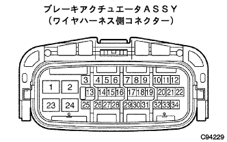

DTC C1241/41 電圧低下異常 |
| DTCNo. | DTC検出条件 | DTC出力関連項目 |
|---|---|---|
| C1241/41 |
|
|
| 手順1 | ヒューズ点検（ECU-IG 7.5A） |
ヒューズ(ECU-IG 7.5A)が正常か点検する。
|
| ||||
| OK | |
| 手順2 | ワイヤハーネスおよびコネクター点検（電源系） |
ブレーキアクチュエータASSYのコネクターにかん合に不具合がないことを点検する。
IGスイッチOFFでブレーキアクチュエータASSYのコネクターを切り離す。
コネクターのケースおよび端子に変形、腐蝕がないことを点検する。
|  |
SST(トヨタエレクトリカルテスター)を使用して、ブレーキアクチュエータASSYのワイヤハーネスの2(GND1)、24(GND2)端子←→ボデーアース間の導通を点検する。
IGスイッチをONにし、SST(トヨタエレクトリカルテスター)を使用して、ブレーキアクチュエータワイヤの25(IG1)端子←→ボデーアース間の電圧を点検する。
|
| ||||
| OK | |
| 手順3 | TaSCAN-ECUデータモニター |
SST(TaSCAN)を使用して、ECU電源電圧をデータモニターで確認する。(要領は 参照)
|
| ||||
| OK | ||
| ||